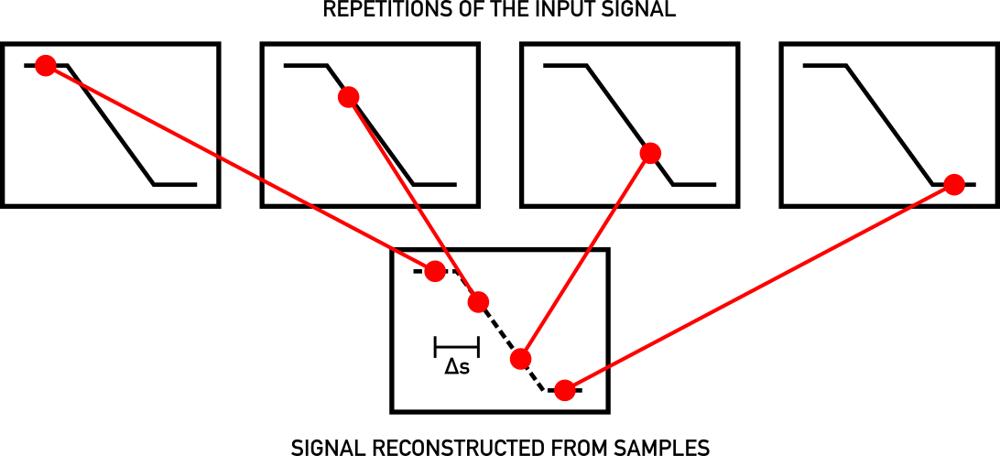
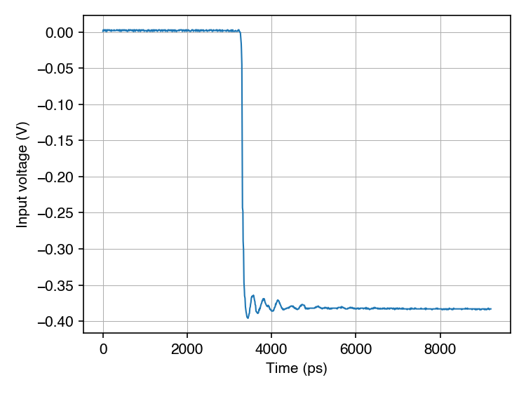

Sampling Scope Prototype
February 2024
Introduction
This post describes a prototype sampling oscilloscope I'm working on.
The current prototype probably has a bandwidth around 7 GHz and an equivalent time sample rate of around 100 Gsps1.
This device is a sampling oscilloscope, not a real-time oscilloscope. This means that it can only capture repetitive signals. For this and other reasons, you're not going to be able to put some probes on this and use it for general circuit debugging. Nevertheless, there are use cases for this class of instrument.
Design
Not Invented Here (Literally)
Equivalent Time Sampling
The design builds on the principle of sequential equivalent time sampling. The idea here is to exploit the (assumed) repetitive nature of the input signal by collecting samples over multiple repetitions of the input signal.
For example, on the first repetition of the input we might sample the input at the start of the cycle, call this point in time t=0. Then on the second repetition we might sample at some small offset from the start, at say t=Δ. On the third repetition we sample at t=2Δ, and so on.
The sequence of samples collected in this way captures the input at an (equivalent) sample rate of 1/Δ, with the advantage of not imposing any restriction on how rapidly the samples are actually collected.

Figure 1: Sequential equivalent time sampling.
Any device that implements this approach needs two main components. First, some kind of sampling device to capture the input at a point in time, and second a way to precisely control the time at which a sample is taken within a repetition, traditionally called a time-base.
Sampling
Accurately sampling the input with the requisite bandwidth is a non-trivial undertaking, especially on a budget.
The key idea in this design is to use a comparator as a successive approximation ADC. It turns out this fits very well with the sequential equivalent time sampling approach.
Since we are assuming the input is repetitive, we can perform the individual steps of the binary search across multiple repetitions of the input. This side-steps the problem of the input signal changing between steps that usually requires a sample and hold circuit in a successive approximation ADC. Instead, the input can be sampled directly by a fast (latched) comparator.
Comparators with sufficient bandwidth are available off the shelf, and they are relatively inexpensive.
Time-base
Sequential equivalent time sampling requires some way to synchronise the scope and the device under test (DUT). For simplicity, I currently assume that the DUT can be driven by an external clock2. In this case, the scope itself can generate a clock to drive the DUT, and the two are synchronised.
The only extra functionality that's needed to implement the time-base is the ability to generate a strobe signal to drive the sampling comparator, that can be shifted to be any of 0, Δ, 2Δ, 3Δ, etc. seconds behind the clock. There are off the shelf programmable delay line ICs that do exactly this, with the resolution required.
In order to make accurate measurements it's necessary to calibrate such a delay line. One approach is to include the delay line as part of a ring oscillator and measure the oscillator's frequency, from which the delay length can be calculated3.
Block Diagram
This block diagram illustrates the high level design just described:

Figure 2: Sampling scope block diagram.
History
Here's a potted history of this idea, as best I know it:
- "A sampling voltage tracker for analyzing high speed waveforms" (McCabe, 1975)
- A Wideband Sampling Voltmeter (Souders et al., 1997). This is just one publication from a larger NIST research effort.
- An eevblog user described the high-level design, including calibration of the delay line, in 2014.
- Jon Klein's project
- Ted Yapo's project
Build

Figure 3: Photo of the prototype.
The current prototype is split across two PCBs, one each for the sampling and delay line sub-circuits. I'm using an Analog Devices ADCMP582 comparator for sampling, and a Micrel SY89296U for the delay line.
The boards were laid out in KiCad, manufactured by JLCPCB, and assembled by hand.
For control I'm using a Raspberry Pi Pico4.
The whole thing is powered from a USB charger. A third-party DC-DC converter generates positive and negative rails at around ±6.5V. Each PCB then has local voltage regulation providing 3.3V and/or ±5V.
One area of the build that I focused attention on was the footprint of the SMA connector used at the input. I've shared details of this in a thread on the eevblog forum.
Testing
Initial testing has been performed using a fast edge generator as the DUT. This is based on an Analog Devices ADCMP580 comparator, which has an output capable of generating edges with a 20/80 transition time of 37ps.
Here's an example measurement taken with the scope:

Figure 4: Example sweep captured by the prototype.
In principle the transition time of this edge can be used to estimate the bandwidth of the scope, but I'm yet to implement time-base calibration so I can't do this accurately. However, the 20/80 transition time of the measured edge (which is very roughly 48ps) is plausibly consistent with the scope's bandwidth being somewhere close to the 8 GHz bandwidth of the comparator5.
Next Steps
Some obvious next steps include:
- Time-base calibration. The hardware already includes the ability to include the delay line in a ring oscillator. With the addition of a clock divider I hope to be able to use the Pico as a frequency counter.
- Diagnose and fix the problem causing erroneous samples to occasionally appear in captured data6.
Longer term, there are many paths I could take from here, though I've not yet settled on a specific plan.
Feel free to email me if you're interested in this stuff, I'd love to chat.
Footnotes
There's room to improve this somewhat without changing the overall approach.
This can be relaxed by adding trigger circuitry to the time-base, allowing the system to be driven by a clock recovered from the DUT.
Actually, it's not possible to compute the absolute delay without knowing how much delay is present in the rest of the ring oscillator. However, it is possible to compute the difference in delay between any two settings of the delay line, which is sufficient.
With a second Pico to program the first.
Assuming the connection between the two comparators has a bandwidth somewhere around 12 GHz.
I cherry-picked the example sweep to avoid this.